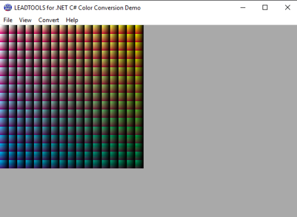

Color Conversion DemoDemonstrates LEADTOOLS Colorspace Conversion SDK features. Converts image data in a buffer from one color conversion model to another. Formats supported include RGB, YUV, CMYK, HSV, HLS, YCC, ARGB, and many more. |
 |